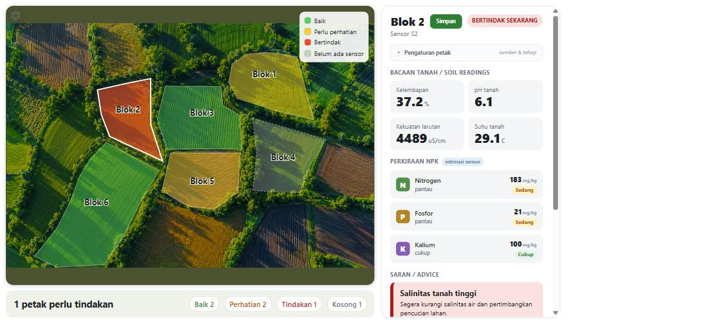
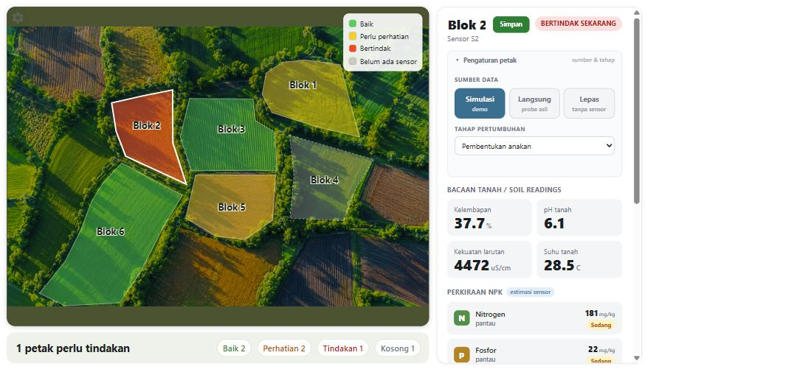
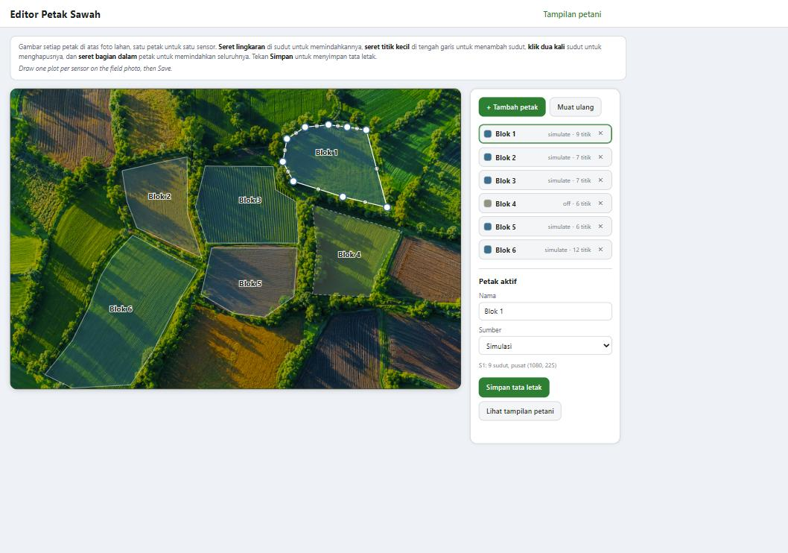

A soil sensor teaching tool for rice farming field workshops in South Sulawesi. One laptop, one probe, one focus group at a time.
Project team briefing, 30 July 2026. Use the arrow keys to move through this deck.
What it is and who it is for
The problem
Salinity, acidity and water status are invisible to the eye. A farmer judges a paddy by habit and by the crop's appearance days or weeks after a problem has already set in, not by a number checked in the moment.
Irrigation timing, salinity risk and fertiliser decisions are made without any direct measurement to weigh against experience. By the time a symptom shows in the plant, the window to act cheaply has often closed.
A tool that turns a soil property into something a standing group can watch change, in the seconds after a probe goes into the ground, gives that group a shared reference point the discussion can build on.
The kit
Wiring: brown to power (4.5 to 30 V DC), black to ground, yellow to 485-A, blue to 485-B. Reversing A and B is the most common field mistake.
The farmer screen

One outlined plot per sensor, laid over the field and tinted by its alert: green Baik (satisfactory), amber Perlu perhatian (attention), red Bertindak (act now), and dashed grey Belum ada sensor for a plot with no sensor attached. A colour legend sits top-right; a summary bar below counts the plots (Baik / Perhatian / Tindakan / Kosong). It fits one screen with no scrolling, and there is no longer a SIMULASI watermark. Tapping a plot opens its detail on the right.
Tapping a plot

An editable plot name with a Simpan button, and a collapsible Pengaturan petak panel: data source (Simulasi / Langsung / Lepas), a Port box when it is live, and a per-plot Tahap pertumbuhan growth-stage dropdown. Below sit the four soil readings (Kelembapan, pH tanah, Kekuatan larutan, Suhu tanah), a Perkiraan NPK estimate, and the advice cards.
The four advice groups
| Group | Rule | Priority |
|---|---|---|
| Salinity | Escalates one severity level during panicle initiation and flowering | Highest |
| Water (AWD) | Re-flood at about 15 cm water-table drawdown; suspended around flowering | Second |
| Acidity | Below pH 5.5, recommend lime or dolomite | Third |
| Nutrients | An NPK estimate ("estimasi sensor") in coarse bands, shown alongside the conductivity-derived soil-solution-strength indicator; a fertiliser dose still comes only from a PUTS test, never the probe | Fourth |
Salinity sits above the other three because a saline event does the most damage the fastest, and rice is at its most sensitive to salt in the same window that acidity and nutrient advice change least. The nutrient group now surfaces an NPK estimate in coarse bands, clearly labelled as a sensor estimate rather than a dose; slide 11 explains the honesty position behind that choice.
Setting up the field

Open it from the top-left gear (or /zone-editor.html) and draw one plot per sensor over the field photo: drag a corner to move it, drag a mid-edge dot to add a corner, double-click a corner to remove it, drag the interior to move the whole plot. Set each plot's name, source and port, then Save persists the layout so the next launch opens straight on the map. The bundled photo is a stand-in; a real site swaps in a drone or satellite image and re-traces.
The hands-on moment
The moment the whole workshop is built around still exists. One plot is set to Langsung (live) on its COM port, the farmer pushes the probe into the soil, and that plot reacts live on the map.
Its colour shifts and its readings update as the probe seats in wet soil - Bertindak to Perhatian in the seconds after a farmer's own hands go to work. A standing group watches one square on the field change, in real time, from something they did.
Behind the map
The top-left gear now opens the plot editor, the main setup surface. This is where the field is drawn, one plot per sensor, and where each plot's name, source and port are set (slide 8).
Reached from the plot editor's header link, or with Ctrl+Alt+O. It still holds the register inspector for unfamiliar sensors, the site name, the language toggle, the field card, PUTS class entry (the only path to a fertiliser dose), scenario rehearsal buttons, demo reset and data export.
The honesty position
They are three functions of one conductivity reading. Three independent lines of evidence agree, and any of the three would be enough on its own:
So the NPK values on each plot's detail are shown as an "estimasi sensor" - a deliberate choice for the demo, presented plainly as an estimate, never as a measurement or a dose. The conductivity-derived soil-solution-strength indicator remains alongside them, and a fertiliser dose still comes only from operator-entered PUTS status classes, via Permentan No. 13 of 2022.
What the evidence base is
| Claim | Source |
|---|---|
| Salinity is the top alert, stage-weighted, worst at panicle initiation and flowering | 58-study meta-analysis, Zheng et al., European Journal of Agronomy, 2023 |
| pH below 5.5 triggers lime or dolomite and a better P and K response | 528 on-farm lowland rice trials in Indonesia, Field Crops Research, 2025 |
| Safe AWD re-floods at 15 cm drawdown, suspended around flowering | IRRI Safe Alternate Wetting and Drying method |
| Fertiliser dose by nutrient status class | Permentan No. 13 of 2022, official Indonesian dose table |
The salinity meta-analysis also reports a pooled mean yield loss of 64.5 per cent under salinity stress across its 58 studies. That figure is an experimental mean across often severe treatments, not a typical field outcome, and it is never shown to farmers for that reason. It belongs here, in front of this team, described exactly as what it is.
What is provisional and needs faculty input
Every farmer-visible string in data/content/ ships marked draft: true.
Headlines, body text and icon choices are all placeholders awaiting Hasanuddin review, and may need
Bugis or Makassarese terms rather than standard Bahasa Indonesia in places.
The mapping from bulk conductivity to a salinity class, and from volumetric moisture to an
estimated water-table depth, in data/calibration/default.yaml, is marked
provisional: true. Neither has been checked against local South Sulawesi paddy soils.
A length of perforated PVC pipe standing beside the probe during workshops teaches the genuine IRRI method and gathers the paired readings this calibration needs.
How a kit is built
python312._pth has #import site
commented out. Left that way, every dependency import fails even though pip reports success. One
uncommented line is the difference between a working kit and a dead one.What we need from the team next
data/content/ is a draft. Hasanuddin faculty sign-off turns these into farmer-ready text,
including any Bugis or Makassarese terms that fit the workshop sites better than standard Bahasa
Indonesia.SawahPintar, Rural AI. University of Newcastle and Universitas Hasanuddin.